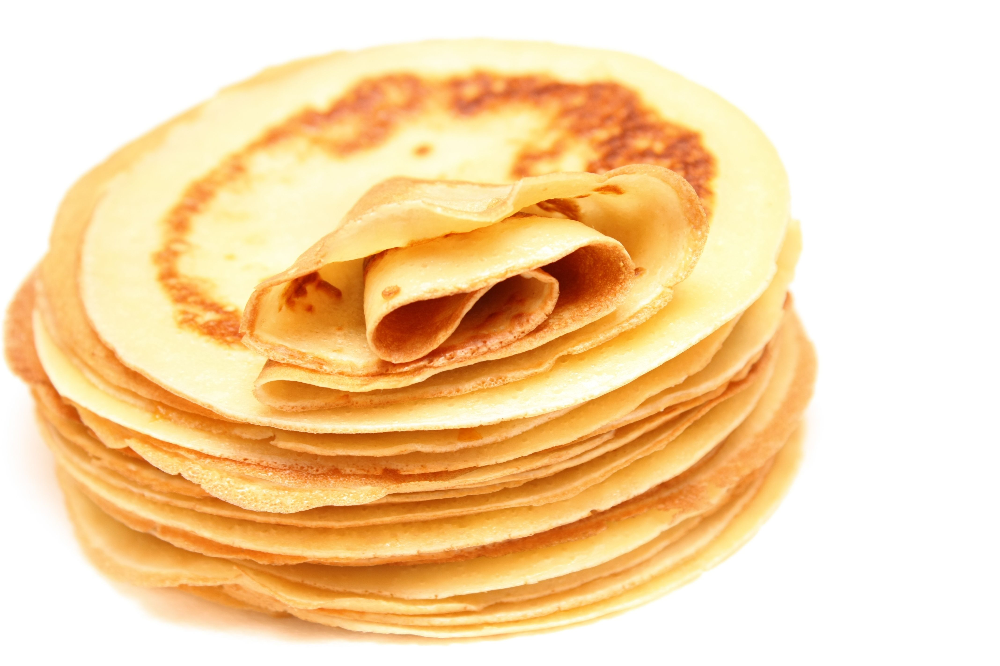
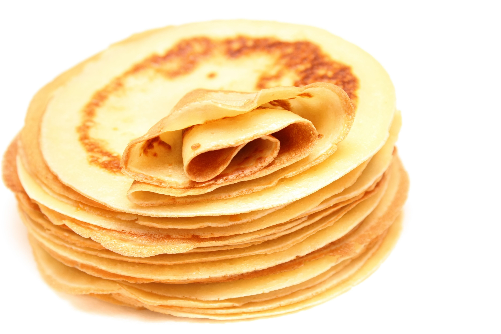

Mettre la farine dans une terrine et former un puits.
Y déposer les œufs entiers, le sucre, l'huile et le beurre.
Mélanger délicatement avec un fouet en ajoutant au fur et à mesure le lait. La pâte ainsi obtenue doit avoir une consistance d'un liquide légèrement épais.
Parfumer de rhum.
Faire chauffer une poêle antiadhésive et la huiler très légèrement à l'aide d'un papier essuie-tout. Y verser une louche de pâte, la répartir dans la poêle puis attendre qu'elle soit cuite d'un côté avant de la retourner. Cuire ainsi toutes les crêpes à feu doux.
 
